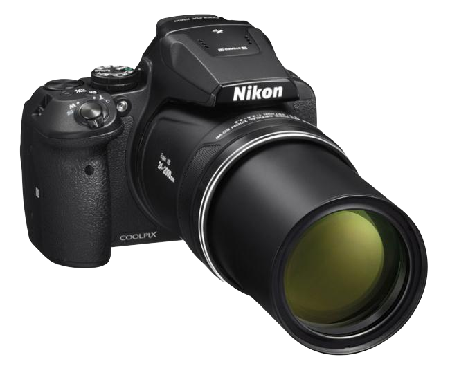
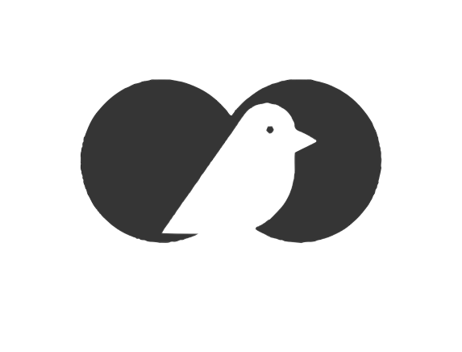
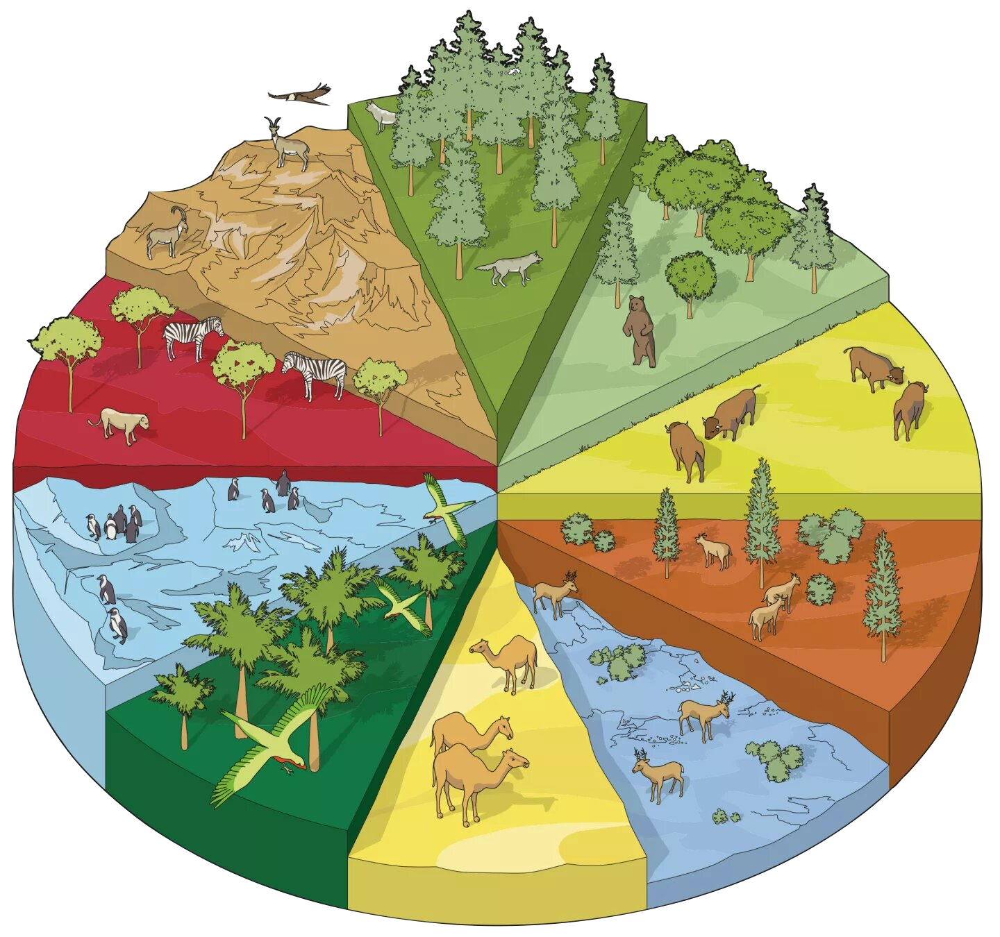
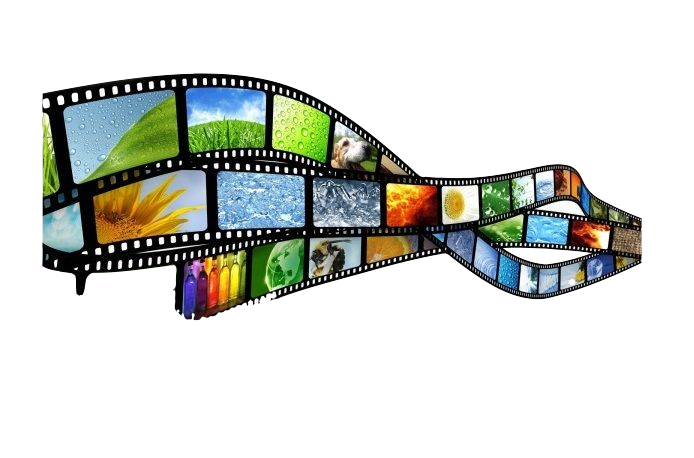
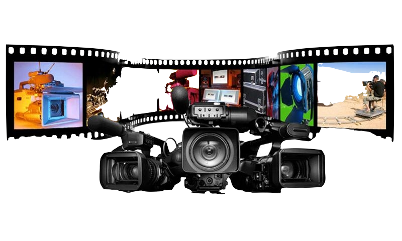

Esta página está hecha por Daniel Arias, Técnico Superior en Gestión Forestal y del Medio Natural, actualmente haciendo una formación profesional de Grado Superior de Desarrollo de Aplicaciones Multiplataforma. Soy un apasionado de las aves y en esta página mostraré una pequeña parte de las fotografías que he ido tomando en los últimos años.
|  |  | |
|  |  |  |